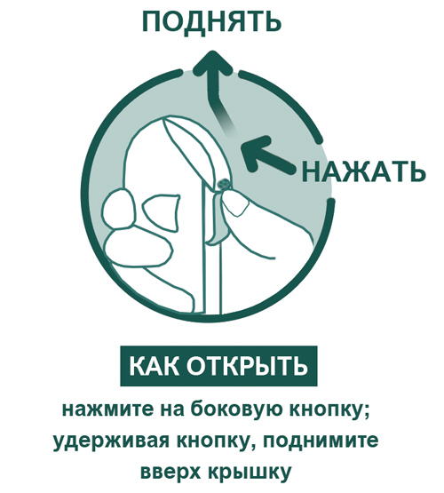
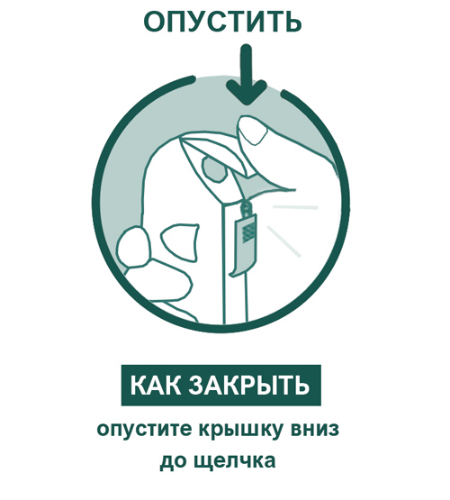

|
 |
| НИКОРЕТТЕ® (NICORETTE®) nicotine таб. д/рассасывания, покр. пленочной оболочкой | ||||||||||||||||||||||||||
|
Клинико-фармакологическая группа: Препарат для лечения никотиновой зависимости Номер и дата регистрации: ЛП-006359 от 20.07.20 Код ATX: N07BA01 |
Владелец регистрационного удостоверения: зарегистрировано Представительство: | |||||||||||||||||||||||||
Форма выпуска, состав и упаковка ◊ Таблетки для рассасывания, покрытые пленочной оболочкой [мятные], от белого до почти белого цвета, овальные, двояковыпуклые; с гравировкой "n" на одной стороне и "2" - на другой стороне.
Вспомогательные вещества: маннитол - 551 мг, камедь ксантановая - 12 мг, ароматизатор Winterfresh RDE4-149 - 8 мг, натрия карбонат - 5 мг, сукралоза - 1 мг, ацесульфам калия - 0.5 мг, магния стеарат - 12 мг. Состав оболочка таблетки: гипромеллоза - 16.8 мг, ароматизатор Winterfresh RDE4-149 - 2.5 мг, титана диоксид - 2.5 мг, сукралоза - 2.1 мг, полировочный агент Sepifilm Gloss - 1 мг, ацесульфам калия - 1 мг, полисорбат-80 - 0.1 мг. 20 шт. - флаконы полипропиленовые× (1) - контейнеры пластиковые. ◊ Таблетки для рассасывания, покрытые пленочной оболочкой [мятные], от белого до почти белого цвета, овальные, двояковыпуклые; с гравировкой "n" на одной стороне и "4" - на другой стороне.
Вспомогательные вещества: маннитол - 538.5 мг, камедь ксантановая - 12 мг, ароматизатор Winterfresh RDE4-149 - 8 мг, натрия карбонат - 7 мг, сукралоза - 1 мг, ацесульфам калия - 0.5 мг, магния стеарат - 12 мг. Состав оболочки таблетки: гипромеллоза - 16.8 мг, ароматизатор Winterfresh RDE4-149 - 2.5 мг, титана диоксид - 2.5 мг, сукралоза - 2.1 мг, полировочный агент Sepifilm Gloss - 1 мг, ацесульфам калия - 1 мг, полисорбат-80 - 0.1 мг. 20 шт. - флаконы полипропиленовые× (1) - контейнеры пластиковые. ◊ Таблетки для рассасывания, покрытые пленочной оболочкой [фруктовые], от белого до почти белого цвета, овальные, двояковыпуклые; с гравировкой "n" на одной стороне и "2" - на другой стороне.
Вспомогательные вещества: маннитол - 549.4 мг, камедь ксантановая - 12 мг, ароматизатор Tutti Frutti - 9.6 мг, натрия карбонат - 5 мг, сукралоза - 1 мг, ацесульфам калия - 0.5 мг, магния стеарат - 12 мг. Состав оболочки таблетки: гипромеллоза - 17 мг, ароматизатор Tutti Frutti жидкий - 1 мг, титана диоксид - 2.2 мг, сукралоза - 0.8 мг, ацесульфам калия - 0.4 мг, полисорбат-80 - 0.1 мг, полировочный агент Sepifilm Gloss - 1 мг. 20 шт. - флаконы полипропиленовые× (1) - контейнеры пластиковые. ◊ Таблетки для рассасывания, покрытые пленочной оболочкой [фруктовые], от белого до почти белого цвета, овальные, двояковыпуклые; с гравировкой "n" на одной стороне и "4" - на другой стороне.
Вспомогательные вещества: маннитол - 536.9 мг, камедь ксантановая - 12 мг, ароматизатор Tutti Frutti - 9.6 мг, натрия карбонат - 7 мг, сукралоза - 1 мг, ацесульфам калия - 0.5 мг, магния стеарат - 12 мг. Состав оболочки таблетки: гипромеллоза - 17 мг, ароматизатор Tutti Frutti жидкий - 1 мг, титана диоксид - 2.2 мг, сукралоза - 0.8 мг, ацесульфам калия - 0.4 мг, полисорбат-80 - 0.1 мг, полировочный агент Sepifilm Gloss - 1 мг. 20 шт. - флаконы полипропиленовые× (1) - контейнеры пластиковые. × флакон синего цвета (Flip-pack), в дно которого встроена ячейка, содержащая влагопоглотитель силикагель. | ||||||||||||||||||||||||||
| ||||||||||||||||||||||||||
Описание препарата основано на официально утвержденной инструкции по применению и утверждено компанией-производителем для издания 2022 г. | ||||||||||||||||||||||||||
Фармакологическое действие |
Фармакокинетика |
Показания |
Режим дозирования |
Побочное действие |
Противопоказания |
Беременность и лактация |
Особые указания |
Передозировка |
Лекарственное взаимодействие |
Условия хранения и сроки годности |
Условия реализации
Фармакологическое действие
Никотин является агонистом никотиновых рецепторов в периферической и центральной нервной системе, оказывает выраженное влияние на ЦНС и сердечно-сосудистую систему. Резкий отказ от курения вызывает развитие характерного синдрома отмены, который включает в себя желание закурить, подавленное настроение, бессонницу, раздражительность, упадок настроения или гнев, возбудимость, сложность концентрации, беспокойство, повышение аппетита или набор массы тела. Клинические исследования показали, что препараты для никотин-заместительной терапии (НЗТ) позволяют курильщикам воздержаться от курения, облегчая симптомы отмены. Фармакокинетика
Всасывание Таблетки для рассасывания полностью растворяются в полости рта. Все количество никотина, содержащееся в таблетке для рассасывания, всасывается трансбуккально или проглатывается. Биодоступность никотина, проглоченного вместе со слюной, снижается из-за первичного метаболизма. Следовательно, при жевании, удержании во рту и последующем проглатывании или жевании и немедленном проглатывании таблеток для рассасывания всасывание никотина замедляется и снижается. Cmax никотина в плазме крови, равная 5 нг/мл для таблеток для рассасывания 2 мг, и 8 нг/мл - для таблеток для рассасывания 4 мг, достигается в среднем в течение 40 и 50 мин соответственно. Таблетки для рассасывания полностью растворяются в течение 16–19 мин. Распределение Vd после в/в введения никотина был изучен в многочисленных исследованиях, часть из которых показали, что его значение составляет 2.5 л/кг. Распределение никотина в тканях зависит от уровня рН. Максимальное содержание никотина достигается в головном мозге, желудке, почках и печени. Связывание никотина с белками плазмы крови составляет менее 5%. По этой причине изменения связывания никотина при применении сопутствующих препаратов или изменения содержания белков плазмы крови при ряде заболеваний, предположительно, не должны оказывать существенного влияния на фармакокинетику никотина. Метаболизм Результаты фармакокинетических исследований показали, что метаболизм и выведение никотина не зависят от лекарственной формы, поэтому для описания распределения, биотрансформации, метаболизма и выведения никотина используются результаты исследования при его в/в введении. Основным органом, элиминирующим никотин, является печень. Тем не менее, никотин также метаболизируется в небольших количествах в почках и головном мозге. В первую очередь, в процесс биотрансформации вовлечен фермент CYP2A6. Известно семнадцать метаболитов никотина, при этом все они, по-видимому, менее активны по сравнению с исходным соединением. Плазменный Т1/2 котинина - основного метаболита никотина – равен 15–20 ч, а его концентрация превышает таковую для никотина в 10 раз. Затем котинин окисляется в транс-3-гидроксикотинин, который является самым распространенным метаболитом никотина в моче. Как никотин, так и котинин проходят конъюгацию с глюкуроновой кислотой. Выведение Средние значения плазменного клиренса никотина составляют от 62.6 до 89 л/ч, Т1/2 составляет приблизительно 2 ч (от 1 до 4 ч). Примерно 10–30% никотина выводится с мочой в неизмененном виде. При высокой скорости фильтрации и pH мочи ниже 5 количество никотина, выводимого с мочой в неизменном виде, может достигать 23%. Линейность/нелинейность Средние значения AUC∞ составили 16.0 нг/мл×ч и 30.8 нг/мл×ч после применения таблеток для рассасывания с содержанием никотина 2 мг и 4 мг соответственно. Фармакокинетика у особых групп пациентов Прогрессирование почечной недостаточности сопровождается снижением общего клиренса никотина. Клиренс никотина у пациентов с тяжелым нарушением функции почек снижен в среднем на 50%. У пациентов на гемодиализе отмечалось увеличение концентрации никотина. Фармакокинетика никотина у пациентов с циррозом печени и легким нарушением функции печени (5 баллов по шкале Чайлд-Пью) не изменялась, но при наличии нарушения функции печени средней степени (7 баллов по шкале Чайлд-Пью) снижалась в среднем на 40–50%. Данные о фармакокинетике никотина при нарушении функции печени более 7 баллов по шкале Чайлд-Пью отсутствуют. У здоровых пациентов пожилого возраста отмечено небольшое снижение общего клиренса никотина, но отклонения носят переменный характер и не дают достаточных оснований для обоснования общих рекомендаций по коррекции дозы, связанных с возрастом. Показания
Лечение табачной зависимости путем снижения потребности в никотине и облегчения симптомов "отмены", возникающих при отказе от курения. Таблетки для рассасывания Никоретте® могут применяться:
Проведение медицинского консультирования и обеспечение психологической поддержки обычно повышают эффективность терапии. Режим дозирования
Местно. Таблетку для рассасывания помещают в полость рта, периодически перемещая ее с одной стороны на другую до полного растворения. Таблетку для рассасывания не следует жевать или проглатывать целиком. Во время приема таблеток для рассасывания недопустим прием пищи и напитков. При появлении симптомов передозировки применение препарата необходимо временно прекратить. Если симптомы передозировки сохраняются, потребление никотина должно быть снижено за счет уменьшения дозы или частоты приема препарата. Взрослые Таблетки для рассасывания Никоретте® следует применять в тот момент, когда обычно выкуривалась сигарета или при возникновении непреодолимого желания закурить. Для увеличения шансов на успех препарат следует принимать ежедневно в необходимой дозе. Первоначальная доза подбирается индивидуально, в зависимости от степени никотиновой зависимости пациента. Таблетки для рассасывания Никоретте® с содержанием никотина 4 мг рекомендуется применять тем, кто выкуривает 20 и более сигарет в день или выкуривает первую сигарету через 30 или менее минут после пробуждения. Остальным курильщикам следует начинать лечение с таблеток для рассасывания с содержанием никотина 2 мг. Полный отказ от курения При полном отказе от курения количество таблеток для рассасывания обычно составляет 8–12 штук в день, максимальная суточная доза – 15 таблеток. Средний курс применения таблеток для рассасывания в указанной дозе – 6 недель. Затем следует постепенно снижать количество применяемых таблеток. Когда суточная доза снизится до 1–2 таблеток, применение препарата следует прекратить. Пациенты должны полностью отказаться от курения во время применения таблеток для рассасывания Никоретте®. Сокращение количества выкуриваемых сигарет Курильщикам, желающим снизить количество выкуриваемых сигарет, следует применять таблетки для рассасывания по потребности между эпизодами курения в целях увеличения промежутков времени между курением и с целью максимально возможного снижения курения. Количество таблеток, применяемых в течение дня, может варьироваться в зависимости от потребности, но максимальная суточная доза составляет 15 таблеток. Как только чувствуется готовность, курильщики должны нацелиться на полный отказ от курения. После отказа от курения следует соблюдать рекомендации терапии и постепенного снижения дозы, указанные выше при полном отказе от курения. Одновременное проведение медицинского консультирования и обеспечение психологической поддержки обычно повышают эффективность терапии. Временный отказ от курения Таблетки для рассасывания можно применять в периоды, когда необходимо воздержаться от курения - например, при нахождении в местах, где запрещено курить, или в других ситуациях, когда нужно воздержаться от курения. Максимальная суточная доза при временном отказе от курения – 15 таблеток. В комбинации с пластырем трансдермальным Для курильщиков с сильно выраженной никотиновой зависимостью или испытывающих непреодолимую тягу к курению, или курильщиков, которым не удалось отказаться от курения с применением одних только таблеток для рассасывания, возможно применение таблеток для рассасывания Никоретте® в комбинации с пластырем трансдермальным Никоретте®. При комбинированном применении таблеток для рассасывания и пластыря трансдермального следует руководствоваться рекомендациями по определению дозы и способа применения, как и при монотерапии. Пациенты должны полностью отказаться от курения во время терапии. Дети и подростки в возрасте до 18 лет Данные контролируемых клинических исследований по применению таблеток для рассасывания Никоретте® у подростков младше 18 лет отсутствуют. Таблетки для рассасывания 2 мг и 4 мг могут применяться у подростков в возрасте от 12 до 17 лет включительно, после консультации с врачом. Перед применением препарата лицами младше 18 лет необходимо проконсультироваться с врачом. Противопоказано применение препарата для детей в возрасте до 12 лет. Рекомендации по использованию флакона   Побочное действие
Независимо от используемых лекарственных средств, некоторые симптомы, как известно, могут быть обусловлены отменой никотина вследствие прекращения курения. К ним относятся эмоциональные или когнитивные эффекты, такие как дисфория или подавленное настроение; бессонница; раздражительность, недовольство или гневливость; тревога; затруднение концентрации внимания, беспокойство или нетерпеливость. Также могут наблюдаться эффекты, влияющие на физическое состояние человека, такие как снижение ЧСС; повышение аппетита или увеличение массы тела, головокружение или пресинкопальные состояния, кашель, запор, кровоточивость десен, повышение частоты афтозных язв или назофарингита. Кроме того, тяга к никотину, рассматриваемая в качестве клинически значимого симптома – важное проявление отмены никотина после прекращения курения. Большинство нежелательных реакций отмечались в раннюю фазу лечения и носят преимущественно дозозависимый характер. В первые несколько дней лечения может наблюдаться раздражение слизистой оболочки полости рта и глотки, однако продолжение лечения приводит к адаптации. При применении таблеток для рассасывания Никоретте® редко развиваются аллергические реакции (включая анафилактические реакции). Приведенные ниже данные суммируют информацию по профилю безопасности препарата, полученную в ходе его применения в клинической практике. Критерии оценки частоты возникновения побочных эффектов: очень часто (≥1/10), часто (≥1/100 и <1/10), нечасто (≥1/1000 и <1/100), редко (≥1/10000 и <1/1000), очень редко (<1/10000, включая отдельные сообщения), неизвестно (оценка на основании имеющихся данных невозможна). По данным клинических исследований Ниже приведены нежелательные реакции, наблюдавшиеся у ≥1% пациентов в ходе клинического исследования. Со стороны пищеварительной системы: очень часто - тошнота*; часто - боль в животе, сухость во рту, диспепсия, метеоризм, гиперсекреция слюны, стоматит, рвота*. Со стороны иммунной системы: часто - реакции повышенной чувствительности*. Со стороны нервной системы: очень часто - головная боль*#; часто - изменение вкуса, парестезия*. Со стороны дыхательной системы: очень часто - кашель***, икота, раздражение слизистой оболочки глотки. Системные нарушения и осложнения в месте введения: часто - чувство жжения**, утомляемость*. * Системное действие. ** В месте применения. *** Более высокая частота развития реакции наблюдалась в клинических исследованиях никотинсодержащего препарата в форме ингалятора. # Несмотря на то что частота развития реакции в группе активного препарата ниже, чем в группе плацебо, частота развития реакции при применении конкретной лекарственной формы, для которой данное нежелательное явление (НЯ) было выявлено как "системная нежелательная реакция", была выше в группе активного препарата по сравнению с группой плацебо. По данным постмаркетинговых исследований Со стороны сердца: нечасто - ощущение сердцебиения*, тахикардия*. Со стороны сосудов: нечасто - гиперемия, гипертензия*, приливы*. Со стороны органа зрения: неизвестно - нечеткость зрения, усиление слезотечения. Со стороны пищеварительной системы: часто - диарея#; нечасто - отрыжка, глоссит, образование пузырей на слизистой оболочке рта и отслоение слизистой оболочки полости рта, парестезия полости рта; редко - дисфагия, гипестезия полости рта#, позывы на рвоту; неизвестно - сухость в глотке, желудочно-кишечный дискомфорт*, боль в губах. Со стороны иммунной системы: неизвестно - анафилактические реакции*. Психические нарушения: нечасто - необычные сновидения*. Со стороны дыхательной системы: нечасто - бронхоспазм, дисфония, одышка*, заложенность носа, боль в ротоглотке, чихание, чувство сдавливания в горле. Со стороны кожи и подкожных тканей: нечасто - повышенная потливость*, зуд*, высыпание на коже*, крапивница*; неизвестно - ангионевротический отек*, эритема*. Системные нарушения и осложнения в месте введения: нечасто - астения*, дискомфорт и боль в грудной клетке*, недомогание*. * Системное действие. # Зарегистрированы с аналогичной или меньшей частотой развития по сравнению с группой плацебо. Противопоказания
Применение при беременности и кормлении грудью
Беременность Курение во время беременности связано с такими рисками, как задержка внутриутробного развития, преждевременные роды или мертворождение. Отказ от курения является единственным наиболее эффективным вмешательством для улучшения состояния здоровья как беременной женщины, так и ее ребенка. Ранний отказ от курения является наилучшим вариантом. Никотин проникает через плацентарный барьер и влияет на дыхательную активность и кровообращение плода. Влияние на кровообращение является дозозависимым. Поэтому беременным женщинам рекомендуется полностью отказаться от курения без использования заместительной никотиновой терапии. Продолжение курения может представлять более высокую опасность для плода по сравнению с контролируемым применением препаратов никотин-заместительной терапии при отказе от курения. Применение беременной женщиной таблеток для рассасывания Никоретте® следует начинать только после консультации с врачом. Грудное вскармливание Никотин свободно проникает в грудное молоко в количествах, которые могут оказать воздействие на ребенка, даже при применении препарата в терапевтических дозах. Поэтому следует воздержаться от применения таблеток для рассасывания Никоретте® в период грудного вскармливания. Если не удалось отказаться от курения, применение препарата следует начинать только после консультации с врачом. С целью уменьшения отрицательного влияния никотина на ребенка препарат следует применять сразу же после кормления или за 2 ч до следующего кормления. Влияние на фертильность, контрацепцию, применение у женщин репродуктивного возраста Курение снижает фертильность у женщин и мужчин. Исследования in vitro показали, что никотин отрицательно влияет на качество спермы. Исследования на крысах продемонстрировали снижение качества спермы и низкую фертильность. В отличие от хорошо известных побочных эффектов никотина на организм человека и течение беременности, последствия терапевтической никотиновой терапии неизвестны. Таким образом, для женщин, планирующих беременность, наиболее целесообразным считается не курить и не проходить НЗТ. В то время как курение может оказывать неблагоприятное воздействие на мужскую фертильность, доказательства того, что во время НЗТ мужчинам необходимы особые средства контрацепции, не установлены. Особые указания
Преимущества отказа от курения перевешивают любые риски, которые присущи никотин-заместительной терапии. Оценка соотношения риска и пользы должна проводиться для пациентов соответствующим специалистом с учетом следующих условий:
Опасность для детей Дозы никотина, которые легко переносят взрослые курильщики, могут вызвать тяжелую интоксикацию у детей, что может привести к смерти. Важно не оставлять без присмотра препараты, содержащие никотин, поскольку это может привести к их неправильному применению и проглатыванию детьми (см. раздел "Передозировка"). Формирование зависимости Может развиться зависимость от препарата, но она является менее опасной для здоровья и более легко преодолимой, чем зависимость от курения. Отказ от курения Полициклические ароматические углеводороды, содержащиеся в табачном дыме, индуцируют метаболизм препаратов, метаболизируемых изоферментом CYP1A2 (и возможно CYP1A1). Прекращение курения может вызывать замедление метаболизма и, как следствие, увеличение концентрации этих препаратов в крови. Это имеет потенциальное клиническое значение для препаратов с узким терапевтическим индексом - например, теофиллина, такрина, клозапина и ропинирола. В дно флакона встроена ячейка, содержащая гранулы влагопоглотителя - силикагеля. Не следует нарушать целостность ячейки, содержащей влагопоглотитель. Не проглатывать влагопоглотитель. Если лекарственное средство пришло в негодность или истек срок годности, не следует выбрасывать его в сточные воды или на улицу. Необходимо поместить лекарственное средство в пакет и положить в мусорный контейнер. Эти меры помогут защитить окружающую среду. Применение препарата Никоретте® сопровождается меньшим риском, чем курение. Влияние на способность к управлению транспортными средствами и механизмами Таблетки для рассасывания Никоретте®, покрытые пленочной оболочкой, не оказывают или оказывают незначительное влияние на способность управлять транспортными средствами и работу с механизмами. Тем не менее, пациенты, использующие никотинзаместительную терапию, должны иметь ввиду, что отказ от курения может вызвать изменения в поведении. Передозировка
При применении в соответствии с инструкцией симптомы передозировки никотином могут возникать у пациентов с низким поступлением никотина до лечения или при одновременном использовании различных источников никотина. Острая или хроническая токсичность никотина у человека в большой степени зависит от схемы и способа применения. Известно, что адаптация к никотину (например, у курильщиков) приводит к значительному повышению переносимости по сравнению с некурящими людьми. Минимальная летальная доза при острой передозировке никотином у детей составляет от 40 до 60 мг (при пероральном приеме табака из сигарет) или от 0.8 до 1.0 мг/кг у - некурящих взрослых. Симптомы При передозировке отмечаются те же симптомы, что и при остром отравлении никотином: тошнота, рвота, повышенное слюноотделение, боль в животе, диарея, потливость, головная боль, головокружение, нарушение слуха и выраженная общая слабость. При более высоких дозах к ним могут добавиться артериальная гипотензия, слабый и нерегулярный пульс, затруднение дыхания, прострация, сосудистая недостаточность и генерализованные судороги. Дозы никотина, которые хорошо переносятся в ходе лечения взрослыми курильщиками, могут вызвать симптомы тяжелого отравления у маленьких детей и даже привести к летальному исходу. Подозрение на отравление никотином у детей должно расцениваться как неотложное состояние, требующее немедленной госпитализации. Лечение Следует немедленно прекратить применение никотина и начать симптоматическое лечение. При необходимости следует начать искусственную вентиляцию легких. Прием активированного угля снижает всасывание никотина в ЖКТ. Лекарственное взаимодействие
Четкого клинически значимого взаимодействия между НЗТ и другими лекарственными средствами не установлено. Тем не менее, никотин теоретически может усиливать гемодинамические эффекты аденозина, т.е. приводить к повышению АД и ЧСС, а также усиливать ответ на боль (боли в грудной клетке по типу стенокардии), провоцируемый введением аденозина. |
||||||||||||||||||||||||||
Вернуться наверх |
||||||||||||||||||||||||||
Copyright © Справочник Видаль «Лекарственные препараты в России», Москва, Россия